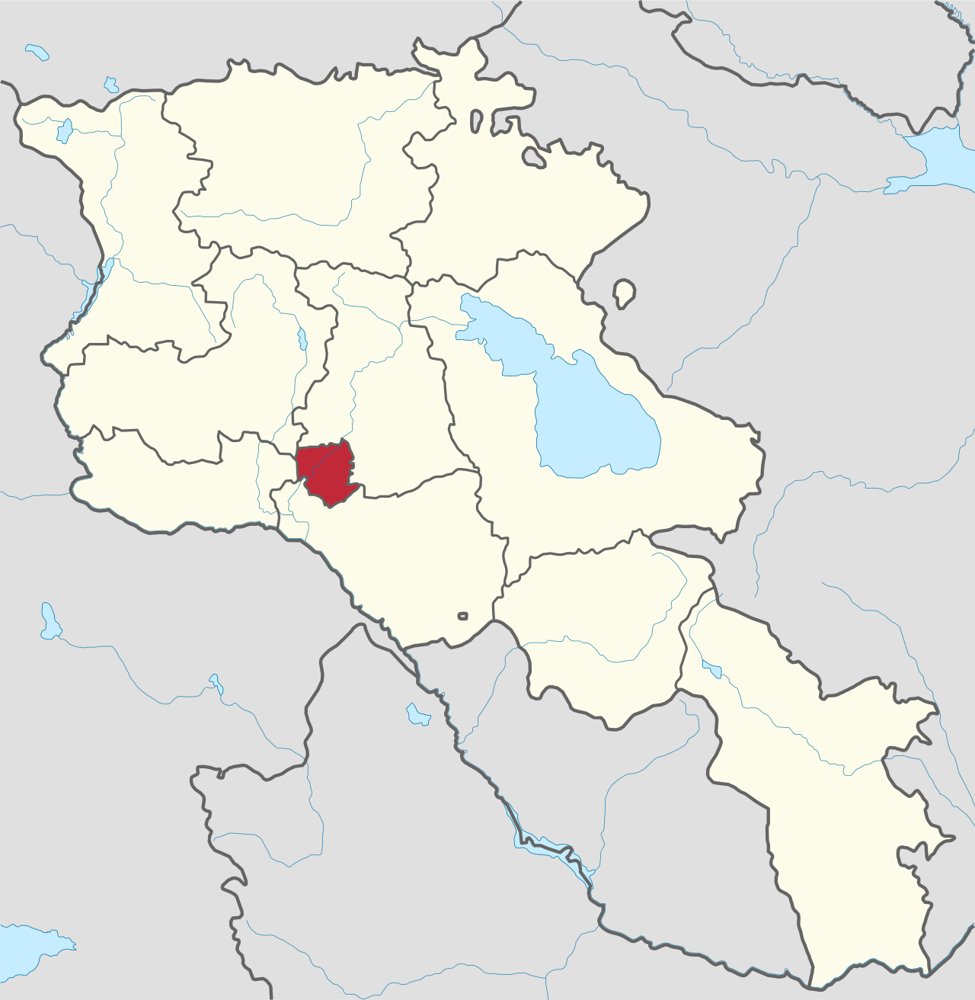
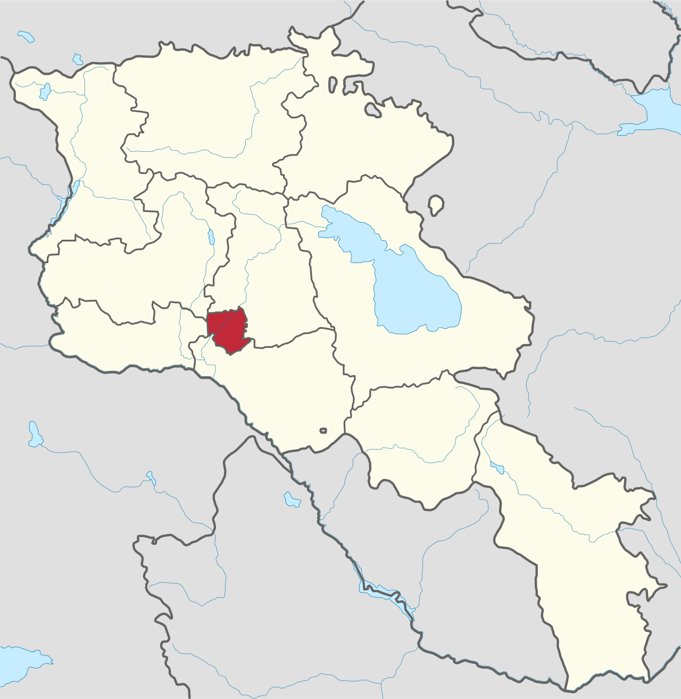

Historia
Jerevans historia kan sägas ha börjat 782 före Kristus med uppförandet av Erebunifästningen av den
urartuiske kungen Argishti I och staden blev huvudstad i kungadömet Urartu, som låg strategiskt vid den
viktiga handelsvägen, sedermera benämnd Sidenvägen, mellan Europa och Asien. Jerevan anses vara en av de
äldsta existerande kontinuerligt bebodda städerna i världen. Dess ålder kan sägas överstiga Roms med 29 år.
Under dess långvariga historia och på grund av dess strategiska position, Armeniens uppdelning mellan
stormakter och dessas erövringar, har Jerevan erövrats och kontrollerats av perser, araber och turkar, innan
Ryssland 1828 annekterade staden, vilken sedermera blev huvudort i guvernementet Erivan. Efter
Oktoberrevolutionen i Ryssland 1917 var Jerevan huvudstad i den så kallade Första armeniska republiken,
vilken existerade enbart tre år (1918-1920). Efter Röda arméns intåg blev Jerevan huvudstad i Armeniska SSR
och en del av Sovjetunionen, vilket den var 1920–1991. Vid Sovjetunionens upplösning 1991 blev Jerevan
huvudstad i det självständiga Armenien.
Jerevan är en tättbebyggd stad, men har samtidigt ett flertal offentliga medelstora parker. Den äldsta
parken är Lyonparken i distriktet Erebuni kring en stor damm. Den har en yta på 17 hektar och har
traditioner ända tillbaka till kung Argishti I av Urartu under 700-talet före Kristus. Den renoverades
2011 och döptes därefter till Lyonparken efter Jerevans franska systerstad.
De förälskades park vid Marskalk Baghramianavenyn och Engelska parken i stadens centrum anlades på
1700-talet respektive 1800-talet. Jerevans botaniska trädgård, som öppnade 1935, Segerparken, som
anlades på 1950-talet, och Ringparken tillhör de större parkerna i staden.
Jerevansjön är en vattenreservoir med en yta på 0,65 km² som invigdes 1967 i floden Hrazdans flöde söder
om stadens centrum.
Armeniska apostoliska kyrkan är den dominerande religiösa institutionen i Armenien. Kyrkan Apostlarna
Paulus och Petrus kyrka från 400-talet i Erebuni, som revs i november 1930 under sovjeteran, var bland
de tidigaste kyrkobyggnaderna över huvud taget. Flera av de antika och medeltidskyrkorna i staden revs
under 1930-talet, då kyrkan förföljdes.
Det styrande organet inom den armeniska kyrkan i Jerevan är Ararats påvestift, med Sankt
Sarkiskatedralen som säte. Det är den armeniska kyrkans största stift och ett av de äldsta kristna
stiften i världen. Det omfattar staden Jerevan och provinsen Ararat.
Jerevan har världens största armeniska kyrkobyggnad, Sankt Gregorios Upplysarens katedral, som invigdes
2001. År 2017 fanns staden fanns 17 armeniska kyrkor i bruk och fyra kapell i stadem
 
